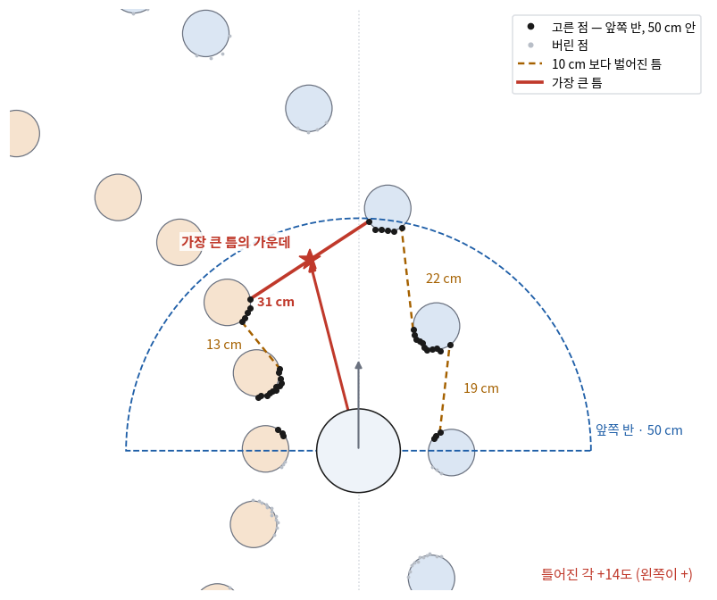

콘 인식과 주행 — 프로젝트의 출발점
- 라이다의 점 수백 개 가운데 어느 점을 보면 되나?
- 그 점들 사이에서 로봇이 갈 길은 어디인가?
- 그쪽으로 가려면 바퀴에 어떤 숫자를 보내야 하나?
24회에서 스캔에서 쓸 수 있는 값을 골랐고, 25회에서 그 값을 점의 좌표로 폈다. 오늘은 그 점에서 출발해 콘 사이로 가는 속도 명령까지 한 번에 잇는다. 프로젝트에서 여러분이 만들 노드의 뼈대다.
오늘 보이는 것은 가장 단순한 알고리즘과 그것을 옮긴 최소한의 코드다. 이 코드가 여러분의 트랙에서 잘 달리는지, 숫자를 얼마로 두어야 하는지는 아직 아무도 모른다. 그것은 여러분이 트랙 앞에서 직접 돌려 보며 판단할 일이다. 코드를 다듬는 일은 에이전트에게 맡겨도 되지만, 무엇을 왜 그렇게 하는지는 여러분이 알고 있어야 고칠 자리를 찾을 수 있다.
① 점에서 바퀴까지 🔴 사람이 이해한다
로봇은 콘 트랙을 어떻게 볼까? 콘이 두 줄로 서 있고, 로봇은 그 사이로 가야 한다. 라이다가 주는 것은 거리 값의 긴 줄뿐이다. 콘 하나하나를 알아보지 않아도 된다. 로봇 바로 앞만 보면 콘이 있는 곳에는 점이 몰려 있고, 콘이 없는 곳은 비어 있다. 비어 있는 곳 가운데 가장 넓은 곳으로 가면 된다. 그 사이를 세 단계로 잇는다.
/scan → 점 거리 값을 (x, y)로 편다 (24·25회)
→ 가까운 점 앞쪽 반에서 50cm 안의 점만 남기고 각도 순서로 세운다 (②절)
→ 가장 큰 틈 이웃한 두 점 사이가 가장 크게 벌어진 곳의 가운데 (③절)
→ /cmd_vel 그 가운데 쪽으로 돈다 (④절)아래 그림이 그 과정이다. 기말 프로젝트의 트랙처럼 콘을 20cm 간격으로 세우고 두 줄 사이를 40cm로 둔 S자 트랙에서, 로봇이 첫 번째 왼쪽 굽이에 들어선 자리다. 콘의 지름은 10cm로 잡았다. 콘의 자리를 정해 두고 그 자리의 라이다가 볼 점을 계산해서 그렸다. 위쪽이 로봇의 앞(x), 왼쪽이 로봇의 왼쪽(y)이다. 주황 콘이 왼쪽 줄, 파란 콘이 오른쪽 줄이다.

② 앞쪽 가까운 점 고르기 🔴 사람이 이해한다
라이다는 한 바퀴를 다 본다. 그런데 지금 갈 길을 정하는 데 등 뒤의 콘이나 2m 너머의 콘이 필요할까?
2-1 앞쪽 반과 50cm
앞쪽 반은 로봇의 왼쪽 옆(+90도)부터 정면을 거쳐 오른쪽 옆(−90도)까지다. 25회의 좌표로는 x > 0인 점이다. 이미 지나온 콘은 뒤에 있으므로 여기서 빠진다.
50cm는 「지금 바로 옆과 앞에 있는 콘만 본다」는 뜻이다. 길 폭이 40cm면 길 가운데의 로봇에서 양옆 콘까지가 20cm쯤이므로, 50cm 안에는 양쪽 줄의 가까운 콘이 두세 개씩 들어온다. 멀리까지 보면 굽은 길 너머의 콘이나 트랙 밖의 가구가 끼어든다. 가까운 것만 보면 그런 일이 줄어든다.
거리 값을 고르는 것은 24회와 같다. NaN·inf와 라이다 사양보다 가까운 값(0.16m 미만)을 버리고, 이번에는 위쪽 한계가 사양의 8m가 아니라 look_distance_(0.50m)다.
2-2 각도 순서로 세우기
③절에서는 점을 오른쪽 옆에서 왼쪽 옆까지 차례로 훑으며 이웃한 두 점을 비교한다. 그런데 스캔 배열은 그 순서가 아니다.
배열의 순서 0도(정면) → 90도(왼쪽) → 180도(뒤) → 270도(오른쪽) → 360도(정면)
앞쪽 반만 남기면 [0도 ~ 90도] ……(뒤쪽은 버림)…… [270도 ~ 360도]
└ 배열의 앞쪽 └ 배열의 뒤쪽
앞쪽 반이 배열의 맨 앞과 맨 뒤로 갈려 있다. 24회에서 정면 구간이 배열의 양 끝에 걸쳤던 것과 같은 일이다. 이대로 훑으면 정면을 사이에 둔 두 점(1도와 359도)이 이웃이 아니게 된다.
그래서 점마다 atan2(y, x)로 각을 구해(25회 「조금 더」, −90도 ~ +90도) 작은 것부터 세운다. 그러면 오른쪽 옆에서 시작해 정면을 지나 왼쪽 옆에서 끝난다.
2-3 코드
// (1) 앞쪽 반(x > 0)에서 look_distance 안의 점만 모아, 오른쪽(−90도)부터 왼쪽(+90도)까지 각도 순서로 세운다
std::vector<Point> front_points(const sensor_msgs::msg::LaserScan & scan) const
{
std::vector<Point> points;
for (std::size_t i = 0; i < scan.ranges.size(); ++i) {
const double r = scan.ranges[i];
if (!std::isfinite(r) || r < 0.16 || r > look_distance_) {
continue; // NaN · inf 이거나, 사양보다 가깝거나(24회), 멀다
}
const double theta = scan.angle_min + i * scan.angle_increment;
const Point p{r * std::cos(theta), r * std::sin(theta)};
if (p.x > 0.0) {
points.push_back(p); // 로봇 앞쪽 반만
}
}
// 배열은 정면(0도)에서 시작해 왼쪽으로 돈다 — 앞쪽 반이 배열의 앞과 뒤로 갈려 있으므로 각도 순서로 다시 세운다
std::sort(points.begin(), points.end(), [](const Point & a, const Point & b) {
return std::atan2(a.y, a.x) < std::atan2(b.y, b.x);
});
return points;
}p.x > 0.0으로 앞쪽 반만 남기는 한 줄과 마지막의 정렬이다.
std::sort에 「무엇이 앞에 오나」를 람다로 주는 것은 13회에서 했다. 여기서는 「각이 작은 점이 앞」이다.
③ 가장 큰 틈 찾기 🔴 사람이 이해한다
점이 오른쪽에서 왼쪽으로 줄을 섰다. 이 줄을 따라가다 보면 점과 점 사이가 훌쩍 벌어지는 자리가 있다. 그 자리는 무엇을 보고 있는 것일까?
3-1 틈이 생기는 자리
같은 콘 위에 찍힌 이웃한 두 점은 아주 가깝다. 두 점 사이는 대략 거리 × 각도 간격(rad)이고, 이 로봇의 각도 간격은 0.029 rad이므로 50cm 앞에서 1.5cm다(23회).
그러니 이웃한 두 점이 min_gap_(10cm)보다 벌어졌다면 그 사이에는 아무것도 없다 — 한 콘에서 다른 콘으로 넘어간 것이다. 이렇게 벌어진 자리를 틈(gap)이라고 부르자.
틈은 두 가지 가운데 하나를 보고 있다.
| 틈이 보는 것 | 양 끝의 두 점 | 그림에서 |
|---|---|---|
| 같은 줄의 콘 사이 | 한 줄에서 이웃한 두 콘 | 13cm · 19cm · 22cm |
| 앞으로 열린 길 | 오른쪽 줄의 콘과 왼쪽 줄의 콘 | 왼쪽 콘과 오른쪽 줄의 앞 콘 사이의 31cm |
3-2 가장 큰 틈이 길인 까닭
틈이 여럿일 때 어느 것이 길인지 무엇으로 가를까? 폭으로 가른다. 콘이 일정한 간격으로 서 있다면, 같은 줄의 콘 사이 틈은 콘 간격에서 콘의 지름을 뺀 것보다 넓어지기 어렵다. 그림의 트랙이면 20 − 10 = 10cm쯤이다. 두 줄 사이의 틈은 길 폭에서 콘의 지름을 뺀 30cm쯤이므로 훨씬 넓다.
같은 줄의 콘 사이 콘 간격 0.20 m − 콘 지름 0.10 m ≈ 0.10 m (그림에서 0.13 · 0.19 · 0.22 m)
두 줄 사이 길 폭 0.40 m − 콘 지름 0.10 m ≈ 0.30 m (그림에서 0.31 m)
→ 가장 큰 틈 = 두 줄 사이 = 갈 길그림에서 같은 줄의 틈이 계산보다 넓은 것은 두 가지 때문이다. 하나는 굽은 길의 바깥 줄(여기서는 오른쪽 줄)이다. 길 가운데를 따라 20cm마다 콘을 세웠으므로 반지름이 큰 바깥 줄은 콘 사이가 벌어졌다(19 · 22cm). 다른 하나는 라이다가 콘의 앞쪽 면만 본다는 것이다. 틈의 양 끝 두 점이 두 콘이 서로 가장 가까운 자리가 아니어서, 잰 틈이 실제 사이보다 조금 넓어진다.
어느 쪽이든 두 줄 사이가 더 넓다. 그래서 규칙은 한 줄이다 — 가장 큰 틈의 가운데로 간다. 왼쪽 줄인지 오른쪽 줄인지, 콘이 몇 개인지 따질 필요가 없다. 틈의 양 끝 두 점의 평균이 틈의 가운데다. 그림에서는 오른쪽 줄 앞 콘의 점 (0.494, −0.022)와 왼쪽 콘의 점 (0.326, 0.233)의 가운데인 (0.410, 0.106)이다.
3-3 틈이 없을 때
50cm 안에 점이 하나도 없거나, 콘 하나만 보여서 10cm보다 벌어진 틈이 없을 수도 있다. 그때는 돌지 않고 곧장 간다. 앞에 아무것도 없다는 뜻이기도 하고, 조금 가면 다음 콘이 50cm 안에 들어온다.
단, 이 규칙 때문에 트랙이 끝나도 로봇은 서지 않는다. 콘이 다 사라지면 곧장 계속 간다. 트랙 끝에서 세우는 규칙은 프로젝트에서 여러분이 정할 몫이다.
3-4 코드
// (2) 이웃한 두 점 사이가 가장 크게 벌어진 곳의 가운데. min_gap 보다 넓은 틈이 없으면 비어 있다
std::optional<Point> widest_gap_center(const std::vector<Point> & points) const
{
std::optional<Point> center;
double widest = min_gap_;
for (std::size_t i = 0; i + 1 < points.size(); ++i) {
const Point & a = points[i];
const Point & b = points[i + 1];
const double gap = std::hypot(a.x - b.x, a.y - b.y); // 두 점 사이의 거리 (25회)
if (gap > widest) {
widest = gap;
center = Point{(a.x + b.x) / 2.0, (a.y + b.y) / 2.0};
}
}
return center;
}🆕 이 코드에서 처음 나오는 것
double widest = min_gap_;에서 시작하는 최댓값 찾기- 「지금까지 본 가장 큰 틈」을
widest에 들고 가다가, 더 큰 틈이 나오면 바꾼다. 처음 값을 0이 아니라min_gap_으로 두었으므로 10cm보다 넓은 틈만 뽑힌다. 하나도 없으면center는 끝까지 비어 있다. std::optional<Point>- 24회에서 「정면을 못 봤다」를 돌려줄 때 쓴
std::optional이다. 이번에는 「틈이 없다」를 돌려준다. 아무것도 넣지 않고 만들면 비어 있고,center = Point{…}로 값을 넣는다. i + 1 < points.size()- 이웃한 두 점
points[i]와points[i + 1]을 보므로i는 마지막 하나 앞에서 멈춰야 한다.i < points.size() - 1로 쓰면 점이 하나도 없을 때0 - 1이 부호 없는 정수(std::size_t)에서 아주 큰 수가 되어 배열 밖을 읽는다. 더하기 쪽으로 쓰면 그런 일이 없다.
④ 목표 방향과 바퀴 🔴 사람이 확인한다
갈 곳(틈의 가운데)이 정해졌다. 그쪽으로 가려면 바퀴에는 무엇을 보내야 할까?
4-1 비례 제어
목표점 (x, y)가 정면에서 몇 도 틀어져 있는지를 구한다. 25회 「조금 더」의 atan2다.
틀어진 각 = atan2(목표점의 y, 목표점의 x) 단위 rad. 왼쪽이면 +, 오른쪽이면 −
회전 속도 = kp × 틀어진 각
직진 속도 = speed (일정)
많이 틀어졌으면 많이 돌리고, 조금 틀어졌으면 조금 돌린다. 이렇게 벗어난 양(오차)에 비례해서 고치는 것을 비례 제어(proportional control, P 제어)라고 하고, 곱하는 숫자 kp를 비례 이득(gain)이라고 한다.
부호는 ROS 좌표 규약이 맞춰 준다 — 목표점이 왼쪽이면 y가 +, 틀어진 각이 +, angular.z가 +, 로봇은 왼쪽으로 돈다.
목표점 = (0.410, 0.106) (그림의 ★)
틀어진 각 = atan2(0.106, 0.410) = 0.252 rad = 14.4도
kp = 1.0 이면 회전 속도 = 1.0 × 0.252 = 0.25 rad/s — 왼쪽으로 돈다
목표점은 언제나 앞쪽 반에 있으므로 틀어진 각은 −90도 ~ +90도(−1.57 ~ +1.57 rad)를 넘지 않는다. kp가 1.0이면 회전 속도도 ±1.57 rad/s 안이다.
kp를 크게 올릴 때는 이 곱이 로봇이 낼 수 있는 회전 속도를 넘지 않는지 같이 보아 둔다.
4-2 코드
스캔이 올 때마다 ②~④를 한 번씩 거쳐 속도 명령을 보낸다.
// 스캔 한 장마다 — 앞쪽 가까운 점 → 가장 큰 틈의 가운데 → 속도 명령
void on_scan(const sensor_msgs::msg::LaserScan & scan)
{
const std::vector<Point> points = front_points(scan);
const std::optional<Point> target = widest_gap_center(points);
geometry_msgs::msg::TwistStamped cmd; // 처음엔 전부 0
cmd.header.stamp = this->now();
cmd.twist.linear.x = speed_; // 틈이 없으면 돌지 않고 곧장 간다
double heading = 0.0;
if (target) {
heading = std::atan2(target->y, target->x); // 틈의 가운데가 틀어진 각. 왼쪽이 +
cmd.twist.angular.z = kp_ * heading;
}
cmd_pub_->publish(cmd);
…
}
프로그램은 24회부터 키워 온 cone_drive 패키지의 cone_drive.cpp를 이 내용으로 바꾼 것이다. CMakeLists.txt와 package.xml은 25회 그대로 둔다.
맞춰 볼 숫자 네 개는 클래스 맨 위에 모아 두었다(⑤절).
전체 코드 — cone_drive/src/cone_drive.cpp (CMakeLists.txt · package.xml · scan_points.cpp 는 25회 그대로)
빌드해서 돌리는 법: cd ~/ros_ws && colcon build --packages-select cone_drive && source install/setup.bash && ros2 run cone_drive cone_drive
// 26회 cone_drive — 앞쪽 가까운 점만 보고, 가장 크게 벌어진 틈의 가운데로 간다. 프로젝트의 출발점이 되는 최소한의 코드
#include <algorithm>
#include <cmath>
#include <memory>
#include <optional>
#include <vector>
#include "rclcpp/rclcpp.hpp"
#include "sensor_msgs/msg/laser_scan.hpp"
#include "geometry_msgs/msg/twist_stamped.hpp"
// 평면 위의 점 하나 (m). x 는 앞, y 는 왼쪽 (25회)
struct Point
{
double x;
double y;
};
class ConeDrive : public rclcpp::Node
{
public:
ConeDrive()
: Node("cone_drive")
{
scan_sub_ = this->create_subscription<sensor_msgs::msg::LaserScan>(
"/scan", rclcpp::SensorDataQoS(),
[this](sensor_msgs::msg::LaserScan::ConstSharedPtr msg) { on_scan(*msg); });
cmd_pub_ = this->create_publisher<geometry_msgs::msg::TwistStamped>("/cmd_vel", 10);
}
private:
// 트랙 앞에서 맞춰 볼 숫자 — 여기서 고치고 다시 빌드한다
const double look_distance_ = 0.50; // 이보다 가까운 점만 본다 (m)
const double min_gap_ = 0.10; // 이웃한 두 점이 이보다 벌어져야 틈으로 본다 (m)
const double speed_ = 0.05; // 직진 속도 (m/s)
const double kp_ = 1.0; // 틀어진 각(rad)에 곱해 회전 속도(rad/s)로 만든다
// 스캔 한 장마다 — 앞쪽 가까운 점 → 가장 큰 틈의 가운데 → 속도 명령
void on_scan(const sensor_msgs::msg::LaserScan & scan)
{
const std::vector<Point> points = front_points(scan);
const std::optional<Point> target = widest_gap_center(points);
geometry_msgs::msg::TwistStamped cmd; // 처음엔 전부 0
cmd.header.stamp = this->now();
cmd.twist.linear.x = speed_; // 틈이 없으면 돌지 않고 곧장 간다
double heading = 0.0;
if (target) {
heading = std::atan2(target->y, target->x); // 틈의 가운데가 틀어진 각. 왼쪽이 +
cmd.twist.angular.z = kp_ * heading;
}
cmd_pub_->publish(cmd);
RCLCPP_INFO_THROTTLE(this->get_logger(), *this->get_clock(), 1000,
"점 %zu개 · %s · 틀어진 각 %.1f도 · 보낸 속도 %.2f m/s, %.2f rad/s",
points.size(), target ? "틈을 찾았다" : "틈이 없다", heading * 180.0 / M_PI,
cmd.twist.linear.x, cmd.twist.angular.z);
}
// (1) 앞쪽 반(x > 0)에서 look_distance 안의 점만 모아, 오른쪽(−90도)부터 왼쪽(+90도)까지 각도 순서로 세운다
std::vector<Point> front_points(const sensor_msgs::msg::LaserScan & scan) const
{
std::vector<Point> points;
for (std::size_t i = 0; i < scan.ranges.size(); ++i) {
const double r = scan.ranges[i];
if (!std::isfinite(r) || r < 0.16 || r > look_distance_) {
continue; // NaN · inf 이거나, 사양보다 가깝거나(24회), 멀다
}
const double theta = scan.angle_min + i * scan.angle_increment;
const Point p{r * std::cos(theta), r * std::sin(theta)};
if (p.x > 0.0) {
points.push_back(p); // 로봇 앞쪽 반만
}
}
// 배열은 정면(0도)에서 시작해 왼쪽으로 돈다 — 앞쪽 반이 배열의 앞과 뒤로 갈려 있으므로 각도 순서로 다시 세운다
std::sort(points.begin(), points.end(), [](const Point & a, const Point & b) {
return std::atan2(a.y, a.x) < std::atan2(b.y, b.x);
});
return points;
}
// (2) 이웃한 두 점 사이가 가장 크게 벌어진 곳의 가운데. min_gap 보다 넓은 틈이 없으면 비어 있다
std::optional<Point> widest_gap_center(const std::vector<Point> & points) const
{
std::optional<Point> center;
double widest = min_gap_;
for (std::size_t i = 0; i + 1 < points.size(); ++i) {
const Point & a = points[i];
const Point & b = points[i + 1];
const double gap = std::hypot(a.x - b.x, a.y - b.y); // 두 점 사이의 거리 (25회)
if (gap > widest) {
widest = gap;
center = Point{(a.x + b.x) / 2.0, (a.y + b.y) / 2.0};
}
}
return center;
}
rclcpp::Subscription<sensor_msgs::msg::LaserScan>::SharedPtr scan_sub_;
rclcpp::Publisher<geometry_msgs::msg::TwistStamped>::SharedPtr cmd_pub_;
};
int main(int argc, char ** argv)
{
rclcpp::init(argc, argv);
rclcpp::spin(std::make_shared<ConeDrive>());
rclcpp::shutdown();
return 0;
}🆕 이 코드에서 처음 나오는 것
target->ystd::optional안에 든 값의 멤버를 읽는다.(*target).y와 같다. 24회에서는*front_distance_로 안의 값을 꺼냈는데, 안에 든 것이 구조체이면->로 멤버까지 한 번에 읽을 수 있다. 비어 있을 때 읽으면 안 되므로if (target)안에서만 쓴다.- 숫자를 파라미터가 아니라 멤버 상수로
- 24회에서는 숫자를
declare_parameter로 받았다. 오늘은 코드를 짧게 두려고const double look_distance_ = 0.50;처럼 클래스 안에 바로 적었다(24회의scan_timeout_과 같은 모양). 바꾸려면 숫자를 고치고 다시 빌드한다. 다시 빌드하지 않고 바꾸고 싶어지면 24회의 방법으로 파라미터로 옮기면 된다.
⑤ 실험하며 맞출 것 🔴 사람이 맞춘다
이 코드가 여러분의 트랙에서 바로 잘 달릴까? 그렇지 않을 가능성이 크다. 콘의 크기, 간격, 길 폭, 바닥, 로봇의 속도가 다 다르기 때문이다. 손댈 자리는 숫자 네 개와 규칙이다.
| 숫자 | 처음 값 | 무엇에 맞추나 | 틀렸을 때 보이는 것 |
|---|---|---|---|
look_distance_ | 0.50 m | 길 폭과 콘 간격 (아래) | 짧으면 콘이 안 보이는 순간이 생겨 곧장 가 버리고, 길면 굽은 길 너머의 콘이나 트랙 밖 물체가 끼어든다 |
min_gap_ | 0.10 m | 한 콘 위의 점 간격(1.5cm)보다 넓게 | 너무 작으면 콘 하나에 틈이 생기고, 30cm 가까이 크면 길도 틈으로 못 찾는다. 같은 줄의 콘 사이(10cm 안팎)가 틈으로 잡히든 안 잡히든 가장 큰 틈은 대체로 길이다 |
speed_ | 0.05 m/s | 스캔 한 장(0.1초) 사이에 가는 거리 | 빠르면 굽은 길에서 돌기 전에 콘에 닿는다. 길 폭 40cm에서 로봇 폭이 18cm쯤이라 한쪽 여유는 6cm쯤이다(콘 지름 10cm일 때) |
kp_ | 1.0 | 로봇과 트랙의 굽은 정도 | 작으면 굽은 길을 못 따라가고, 크면 좌우로 흔들릴 수 있다 |
look_distance_에는 지켜야 할 조건이 하나 있다. 로봇이 콘 한 쌍을 막 지나 그 콘이 옆(앞쪽 반의 끝)으로 빠지는 순간, 다음 쌍이 벌써 보이고 있어야 한다.
그 순간 다음 콘까지의 거리는 옆으로 길 폭의 절반, 앞으로 콘 간격만큼이다.
다음 콘의 겉면까지 ≈ √( (길 폭 ÷ 2)² + 콘 간격² ) − 콘 반지름
그림의 트랙 √( 0.20² + 0.20² ) − 0.05 = 0.283 − 0.05 = 0.23 m → 0.50 m 면 넉넉하다
콘 간격이 0.40 m 로 벌어지면 √( 0.20² + 0.40² ) − 0.05 = 0.447 − 0.05 = 0.40 m → 아직 안이다아무것도 안 보이는 순간에는 3-3대로 곧장 간다. 곧은 길이면 괜찮지만 굽은 길에서는 그사이에 길을 벗어날 수 있다. 거꾸로 너무 멀리 보면 S자의 다음 굽이에 선 콘까지 들어온다. 50cm에서 줄이거나 늘려 보며 로그의 점 개수와 주행이 어떻게 바뀌는지 본다.
규칙에도 손댈 곳이 있다. 예를 들어 로봇이 한쪽으로 쏠려 한쪽 줄만 보이면 길을 놓친다. 그 줄의 콘이 하나만 보이면 틈이 없어 굽은 길에서도 곧장 가고, 둘이 보이면 콘 사이의 틈을 길로 알고 그쪽으로 돈다. 이것을 어떻게 막을까? 트랙 끝에서는 어떻게 세울까? 이런 것은 답이 정해져 있지 않다. 바꿔 보고, 달려 보고, 로그와 rviz2로 확인하는 것이 프로젝트에서 할 일이다.
오늘의 코드는 알고리즘을 보이려고 줄였다. 그래서 24회에서 넣었던 타임아웃 정지가 없다 — 라이다가 끊기면 마지막 명령대로 계속 간다. 그리고 3-3대로 콘이 안 보여도 곧장 간다. 로봇을 바닥에 내려놓고 달리기 전에 24회 ⑦절의 타이머와 타임아웃 정지를 다시 붙여 둡니다. 그리고 노드를 끈 뒤에도 바퀴는 마지막 명령대로 돌고 있으므로, 정지 명령을 보낼 터미널을 하나 열어 둡니다.
$ ros2 topic pub --once /cmd_vel geometry_msgs/msg/TwistStamped '{}'🧪 실습 — 띄운 바퀴로 방향 확인하기 🔴 사람이 본다
오늘의 cone_drive를 빌드해 돌리고, 콘을 손으로 옮겨 가며 로그의 틀어진 각과 바퀴가 도는 쪽이 생각한 대로인지 확인한다.
- 로봇을 받침 위에 올려 바퀴를 띄운다. 터미널 1에서 로봇을 켠다(24회 ①절).
~/ros_ws/src/cone_drive/src/cone_drive.cpp를 위 📄 상자의 내용으로 바꾸고 빌드해서 돌린다.⌨ 터미널 2
$ cd ~/ros_ws && colcon build --packages-select cone_drive && source install/setup.bash $ ros2 run cone_drive cone_drive- 아무것도 두지 않고 로그를 본다. 「틈이 없다」와 함께 직진 속도만 나가는가?
- 로봇 앞 30cm쯤, 좌우로 20cm씩 떨어진 자리에 콘(종이컵도 된다)을 하나씩 둔다. 둘을 같이 왼쪽으로 옮기면 틀어진 각이 +로 커지고 오른쪽 바퀴가 더 빨리 도는가? 오른쪽으로도 같은 식으로 본다.
- 한쪽에 콘 둘을 20cm 간격으로 놓고 다른 쪽 콘은 치워 본다. 로봇이 어느 틈을 고르는가? ⑤절에서 말한 「한쪽 줄만 보일 때」다.
- 끝나면 노드를 끄고 터미널 3에서 정지 명령을 보낸다.
한 장 요약
무엇을 먼저 볼지: 오른쪽 「이것만 알면 된다」 열이다.
| 용어 | 코드에서 이렇게 보인다 | 이것만 알면 된다 |
|---|---|---|
| 앞쪽 가까운 점 | r > look_distance_면 버린다 · p.x > 0.0만 남긴다 | 앞쪽 반·50cm 안의 점만 봤다. 지나온 콘과 먼 물체가 빠진다 |
| 각도 순서로 세우기 | std::sort + atan2(a.y, a.x) < atan2(b.y, b.x) | 앞쪽 반이 배열의 앞과 뒤로 갈려 있어서 다시 세웠다 |
| 틈 (gap) | std::hypot(a.x - b.x, a.y - b.y) > min_gap_ | 이웃한 두 점이 10cm보다 벌어지면 그 사이는 비어 있다 |
| 가장 큰 틈 | if (gap > widest) · 비면 std::optional | 같은 줄의 콘 사이보다 두 줄 사이가 넓다 — 가장 큰 틈이 길이다 |
| 비례 제어 | kp_ * std::atan2(target->y, target->x) | 틀어진 만큼 돌렸다. 틈이 없으면 곧장 간다 |
| 맞출 숫자 | look_distance_ · min_gap_ · speed_ · kp_ | 클래스 맨 위에서 고치고 다시 빌드한다. 다음 콘이 늘 보이게 look_distance_를 잡는다 |
🤖 오늘 나온 프롬프트 모음 🟢 맡긴다
오늘의 코드를 붙여 넣고 시키면 됩니다. 한 번에 하나씩 바꾸면 무엇이 주행을 바꿨는지 가릴 수 있습니다.
| 프롬프트 | 받은 뒤 사람이 확인하는 것 |
|---|---|
| 타임아웃 정지 | 노드가 도는 중에 라이다 드라이버만 끄면 바퀴가 서나 (24회 ⑦절과 같은 방법) |
| 파라미터로 바꾸기 | --ros-args -p look_distance:=0.7로 돌렸을 때 로그의 점 개수가 늘어나나. ros2 param list에 네 개가 보이나 |
| rviz2 마커 | 콘을 옮겼을 때 빨간 선이 내가 생각한 틈에 걸리나. 마커가 실제 콘 자리에 겹치나 |
✅ 오늘의 점검
조금 더 알아두면 시험 범위 아님
P 다음의 I와 D — PID 제어
비례 제어는 「지금 벗어난 양」만 본다. 여기에 벗어난 양이 쌓인 것(적분, I)과 벗어난 양이 바뀌는 빠르기(미분, D)를 더해 쓰는 것이 PID 제어다.
I는 조금씩 계속 남는 오차를 없애고, D는 목표에 가까워질 때 미리 힘을 빼서 출렁임을 줄인다. 이 프로젝트의 속도에서는 P만으로 대체로 충분하고, kp를 올렸을 때 출렁임이 문제가 되면 D를 생각해 볼 수 있다.
제어공학 과목에서 자세히 다룬다.
Follow the Gap — 같은 생각의 이름
「가장 넓게 빈 곳으로 간다」는 생각은 자율주행 경주 대회에서 많이 쓰여 Follow the Gap(틈 따라가기)이라는 이름으로 불린다. 소형 자율주행 자동차 경주인 F1TENTH(1/10 크기 자동차로 하는 대회)의 입문 과제로도 자주 나온다. 그쪽에서는 점 사이의 틈 대신 각도마다 거리가 충분히 먼 구간을 찾기도 하고, 가장 가까운 장애물 둘레를 로봇 폭만큼 지워 두고 찾기도 한다. 오늘의 방법이 막히는 자리가 생기면 이 이름으로 찾아보면 고칠 거리가 많이 나온다.
콘을 알아보고 줄을 나누는 방법
오늘은 콘 하나하나를 알아보지 않았다. 다른 길도 있다 — 가까운 점끼리 묶어 콘 하나를 찾고(군집화, clustering), 콘끼리 다시 묶어 왼쪽 줄과 오른쪽 줄을 나눈 뒤 두 줄의 가운데로 가는 것이다. 콘의 자리를 알면 할 수 있는 것이 많아지지만, 규칙과 맞출 숫자가 늘어난다. 오늘의 방법으로 달려 보고 모자란 것이 보이면 그때 생각해 볼 만하다.
TF2는 어디 갔나
오늘의 코드는 점을 base_link로 옮기지 않고 라이다 기준(base_scan) 그대로 쓴다. 터틀봇3 버거에서 둘의 차이는 x 방향 3.2cm쯤이라 목표점의 각에 몇 도 안팎의 영향을 준다.
옮기고 싶다면 25회 ⑤절의 방법을 쓰면 된다. 점이 많으므로 점마다 transform()을 부르기보다 lookupTransform()으로 두 좌표계의 관계를 한 번 받아 두고 25회 2-3의 변환 행렬을 직접 곱하는 쪽이 낫다.
출처
- REP 103 — 회전의 + 방향(반시계)
- V. Sezer, M. Gokasan, "A novel obstacle avoidance algorithm: Follow the Gap Method", Robotics and Autonomous Systems 60(9), 2012